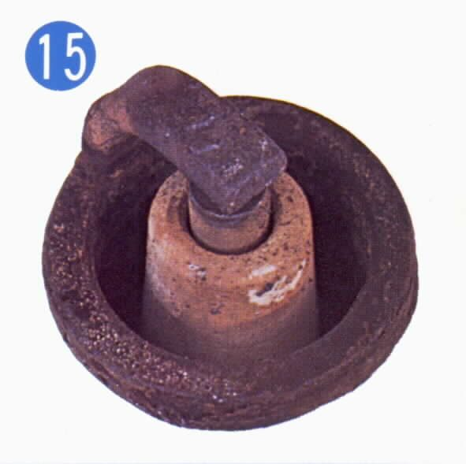
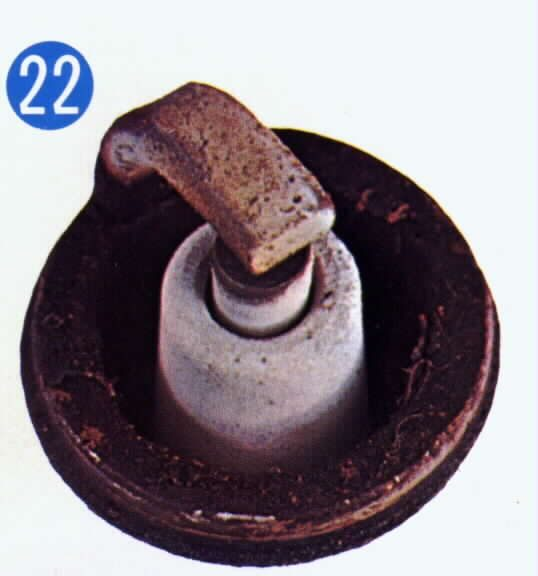
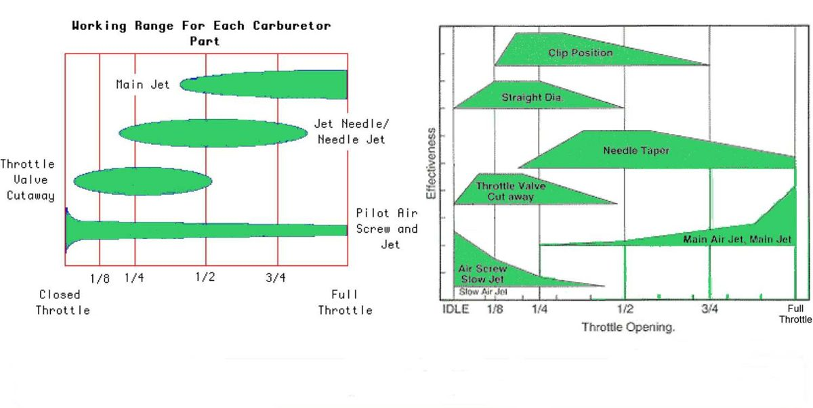
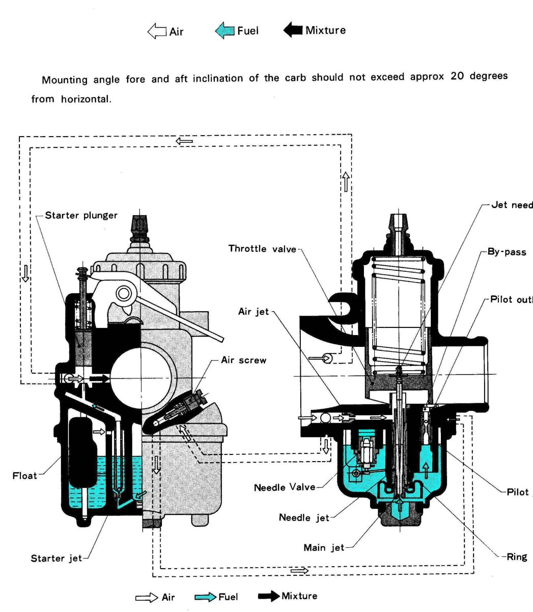

A carburettor that runs badly is running too rich or too lean. Each part of the carburettor does most of its work over one part of the throttle range, so the trick is to find the throttle position where the fault happens, then change the part that controls that range. Most riders never need to do this. Use it when a clean carburettor, a clean air filter and a good spark plug still leave a fault, or when the engine or exhaust has been modified.
Safety
- Test on a quiet, flat road. Do not run at a speed you cannot control to read a plug.
- The exhaust and plug are hot. Let them cool before touching.
- Change one thing at a time.
You need
- A new or very clean spark plug of the correct type. See Read a spark plug.
- Masking tape, a pen and a ruler or tape measure.
- The jets and needle options listed in your bike's manual.
Steps
- Warm the engine to normal running temperature. A too cold or too hot engine gives a false picture.
- Fit the clean plug. Hold the throttle at the position you want to test and ride a short distance on a flat road.
- Switch the ignition off, close the throttle, pull the clutch in and coast to a stop. Remove the plug and read it: rich (dull black, dry and sooty), normal, or lean (whitish or burnt looking).
- Find the throttle position of the fault. Put a strip of tape on the throttle housing and one on the grip. With the throttle shut, mark both strips so the marks line up. Open fully and mark again. Divide the gap into quarters and mark those.
- Match the position to the part that works there. Roughly: pilot (idle) screw and pilot jet near closed; slide cutaway just off idle to a quarter; jet needle and needle jet in the middle; main jet near full throttle. The air jet works over about the same range as the main jet and fine-tunes it. Ranges overlap, so a rough match is enough.
- Change that one part: a larger (richer) or smaller (leaner) jet, or move the needle clip. Use sizes from your bike's manual. Retest the same way.
Signs to read
| Mixture | What you see |
|---|---|
| Too rich | Dull, uneven engine note. Worse with the choke on, worse when hot, slightly better with the air cleaner off. Heavy exhaust fumes. Plug black, dry and sooty. |
| Too lean | Engine overheats. Better with the choke on. Poor acceleration. Plug whitish or burnt. Engine speed rises and falls. Noticeable lack of power. |
Good to know
- Wear changes the mixture. As compression falls, suction in the carburettor falls and the engine may run lean. A big bore kit can do the reverse.
- A fuel level a little higher in the bowl gives a very small richening, and lower a very small leaning. Stay inside the range in the manual.
- Air jets can be screwed in, pressed in, or missing on some carburettors. Do not remove a pressed-in jet.
Tuning order and the choke test
- Tune in this order: main jet at full throttle, then pilot at idle, then slide cutaway, then needle, then idle again. Each part affects the next. See Tune a slide carburettor in the right order.
- To tell rich from weak at the throttle position of the fault, close the choke a little. Better running means weak; worse running means rich.
- Spitting back through the carburettor is a weak sign: Engine spits back through the carburettor.
- Altitude and air temperature change the mixture with no change to the jets: Adjust jetting for altitude and air temperature.
Check your work
- Smooth running at every throttle position and a plug colour that reads normal.
- No stumble at the throttle position you marked.
If it did not fix the problem
- Before changing jets, rule out air leaks: Find an intake air leak.
- Clean the passages: Clean the carburettor.
- Fault at idle: Adjust carburettor idle speed and mixture.
Related notes
- To find which throttle position has the fault, see Mark the throttle grip to find where a jetting problem is.
- Jetting can change as the engine wears. Falling compression gives less vacuum at the venturi and a lean tendency, which calls for richer jets. A big-bore kit can do the reverse.
- Float level has a tolerance range. A level at the high end of the range makes the mixture very slightly richer, and one at the low end very slightly leaner.